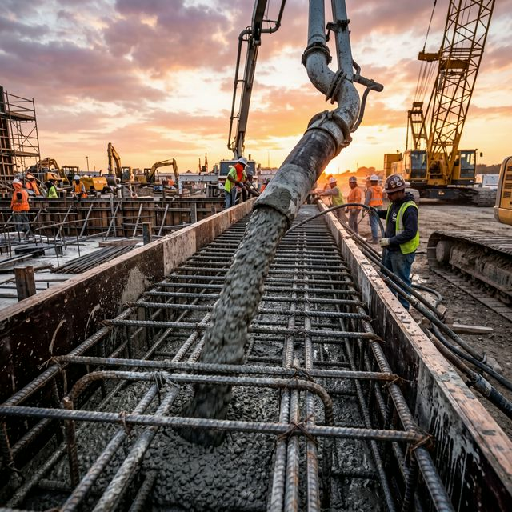

Fundații & Beton
Baza oricărei construcții durabile. Executăm lucrări de armare și turnare beton pentru fundații, stâlpi și grinzi la cele mai înalte standarde de siguranță.
architecture
Respectarea riguroasă a proiectului tehnic
precision_manufacturing
Vibrarea betonului pentru eliminarea golurilor